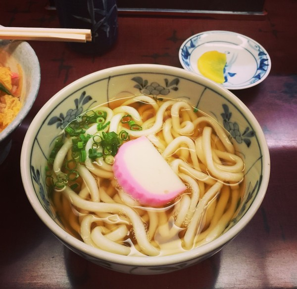

Recipe Detail
Recipe Detail
Udon

Required ingredients
List of ingredients
- Udon noodles
- Clear broth or kombu-based broth
- Soy sauce
- Mirin (Japanese cooking rice wine)
- Sugar
- Chopped green onions
- Seaweed strips
- Tempura (optional, e.g., shrimp, pumpkin, sweet potato)
- Onsen egg or boiled egg (optional)
- Fish slices (optional, such as fried fish or fish cake)
Other
-
- Difficulty level: medium
- Required time: 20min
Steps
- In a pot, combine clear or kombu-based broth, soy sauce, mirin, and sugar, then bring to a boil.
- In a separate pot, boil enough water and cook the udon noodles according to the package instructions.
- Rinse the cooked udon noodles in cold water, then drain.
- Place the udon noodles in a bowl, then pour the previously prepared broth over it.
- Add toppings like tempura, chopped green onions, seaweed strips, onsen egg or boiled egg as desired.
- Garnish with some chopped green onions and seaweed strips.
- Enjoy your meal.